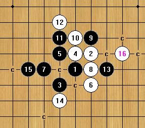
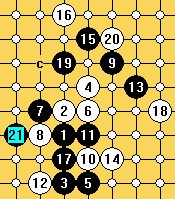

都是些弄了很久才弄出来
首页
五子棋交流
#1 都是些弄了很久才弄出来 作者：卖身打胎 发表时间：2008-9-23 19:16:42
=======上图对应的爱五子棋谱代码如下，以便你拆解：========
h8i9g7h9g9i7i10g10f8i8j7h10j8e10f11h11f9f10d10e9d8e8e11f6e7d7h12f12i5h6j6j5l8k7l9m10k10k8j10j9l10l11c11g11e13d12i12j11i11k9i13i14g13f14f13h13c10
======================================================［ 有志青年 于 2008-9-24 7:30:48 时奖励此帖[金币加 20 威望加1］
#2 Re:都是些弄了很久才弄出来 作者：卖身打胎 发表时间：2008-9-23 19:20:04
=======上图对应的爱五子棋谱代码如下，以便你拆解：========
h8h9h6i10i6i9g9g8j11i7i8h10g6f6h7f7e6f5f4g10j10j8k7j6k8j7j5k6i5h5j4
======================================================
#3 Re:都是些弄了很久才弄出来 作者：卖身打胎 发表时间：2008-9-23 19:33:17
=======上图对应的爱五子棋谱代码如下，以便你拆解：========
h8h9h6i10i6i9g9g8j11i7i11h10h11g11j8j9k9h7g7e10g10f9d11f8f10e11e9c9g13i8g6f6f7d8e7c8e8d9
======================================================
#4 Re:都是些弄了很久才弄出来 作者：lfzxdh 发表时间：2008-9-23 21:26:40
支持下DG ，最近怎么不在棋室见你了呢？
，最近怎么不在棋室见你了呢？
#5 Re:都是些弄了很久才弄出来 作者：卖身打胎 发表时间：2008-9-24 11:56:34
=======上图对应的爱五子棋谱代码如下，以便你拆解：========
h8h9i7g9i9g7j8g8g10h10i10i11f8i6k8d9h7g6g5h6f6f7e8d7e7d8d6e10
======================================================
=======上图对应的爱五子棋谱代码如下，以便你拆解：========
h8h9i7g9i9g7j8g8g10h10i10i11f8i6k8d9f9h12h13h11
======================================================这个16绝对杀死15 修正以前的旧谱
［ 有志青年 于 2008-9-25 15:23:06 时奖励此帖[金币加 20 威望加1］
#6 Re:Re:都是些弄了很久才弄出来 作者：yoda 发表时间：2008-9-25 12:22:37

以前的定式没问题，白能胜。
［ 有志青年 于 2008-9-25 15:23:08 时奖励此帖[金币加 20 威望加1］
#7 Re:都是些弄了很久才弄出来 作者：卖身打胎 发表时间：2008-9-25 21:51:42
=======上图对应的爱五子棋谱代码如下，以便你拆解：========
h8h9j10i9k9f9j9j8k7i11k8k10i10g9e9l7g11f8h10f10f7k6j5l5l8j6j7i6l6g8g10e10h7c8f11c9
======================================================上午下的一盘棋 早上起来没吃早餐 低血糖 大脑有些缺氧 对手跟我一样都开了软件下的 根据棋谱下了前十几手的定式 17手很差 看似将盘面上的白子防得很死 不过黑棋过早的失去先手那就是理论上的白必胜 到21手我做了个简单的交换（对手先的21挡在了上面很简单的就杀掉了） 可这简单的交换里面白棋还暗藏杀机 我仔细的算了下不能做出必杀型22就封在了下面黑棋的眠3上 准备在此占点便宜在靠过去 23简单的挡了下我的活2 24是因为前面黑棋的21跟9形成了一个6子而且白棋局面也很恐怖 28我活了个3目的就是往前面的优势区域上转移 形成所谓的AA区 这里也是利用了软件的误算 29挡反了麻烦大了 此后利用软件做出杀来
#8 Re:都是些弄了很久才弄出来 作者：卖身打胎 发表时间：2008-9-25 22:09:19
=======上图对应的爱五子棋谱代码如下，以便你拆解：========
h8h9j10i9i10j8g9g10i8h10g11f10e10l9k9l8l6k8m10m8n8k10j11l7j13j12n7j5k6j6j7i5k7l5k5j4h6n5m6k4o9m7h11i11g12l11l10k13l14f13f11d9k14i14n10n11n9n6h7g7i4e8g6j2j3f5k2h5g5d8d11e11f4e3c8d7f9g8d6e6f7e5
======================================================这是晚上才下的 对手依然也开了软件 根据棋谱下到了27手 我开始长考 花了2分钟算出了到42手白就在下面形成了个必胜型 但先手却在黑棋手中我继续算黑棋是否在白棋之前就VCT 不久软件就显示黑棋的VALUE值200+了 但我从来不信那些 软件的缺陷实在是不少 我就自己看着盘面来下黑棋 大概用了5，6分钟的时间没能找出黑能杀 但能化解掉前面白棋必胜型 可是那时的盘面对于黑棋来说是非常不利的 于是我决定就这么下了 直到61手对手下出来的跟我之前算过的差不多 不过62的位置黑棋没下我就毫不客气的点了下去 这时我还有2分钟 而对手已经进入到读秒了 到69手差不多都是跟着软件来下的 这时我又得到了先手 70很恐怖的一手 之后黑棋的防守就看起来很无奈了 下到82对手投了
#9 Re:都是些弄了很久才弄出来 作者：卖身打胎 发表时间：2008-9-26 23:42:21
======================================================
=======上图对应的爱五子棋谱代码如下，以便你拆解：========
h8h9h7h6j7g8i7g7g9j6i5f7e6i6g6f5f8h10i10l7k10j9l9j11j12k11e7e8g12e11g11h11h12i12g10g13f12f10
======================================================
=======上图对应的爱五子棋谱代码如下，以便你拆解：========
h8h9h7h6j7g8i7g7g9j6i5i8i10l7i11f8i12i13i6f10e9k8h11h12f11g11j14j13g12f13h13i14晚上看见和谐大熊猫跟别人下松3下得很嗨就去用松3考考他 果然将他考住了两盘都下和 到11手都是松3的定式 12手白棋有很多点可以下 我选择了一个据说是俄罗斯的小孩都能下出黑必胜的分支 屏蔽大概对此分支不熟悉17也没怎么想就下出来了 18手我挡住活2不让他发展过去 他19手想了也没一会封了我的眠3直接就开始了 20我也选择了去封住他的眠3 因为我知道 没了这个眠3黑棋要想杀是很困难的 21手他用了比较长的时间去想 可下出来的这个21攻击力一般 之后在我的死缠下和了
第2盘棋是之前我看他跟别人下时的那个分支 当时屏蔽13手是下在I6的位置上而对手14手是挡在H5的位置 防得比较弱 如果防在L7上 黑棋杀起来是很费力的 所以我下了这个12 可屏蔽却换了个13直接下在了I10 可能是因为上盘我就封了他眠3让他很不爽 可不爽归不爽我还就不让你爽我又一次封住他的眠3 15他下得飞快 我一看就有些傻眼 黑棋上面2个活2外加1个眠3 要起来小命不保了 不管我怎么防黑棋都能轻松杀掉 英雄总是要在最关键的时候才现身 F8防住他1个活2 而且把他的眠3也控制住了 还算不错拣回半条命 他也没想就在I12活3了 我当然挡了难道面对面还不挡吗 这时他好象察觉了什么19手想了很久才下 哟怎么了 19怎么这么消极啊 其实是屏蔽看明白了棋局 这时19手要是在上面任何一个点做杀被我在E9一冲造出一个6子的长禁白棋在下面先于黑棋杀了 20我又封他一个眠3自己也做出VCT 21他也来封我的这个眠3解杀 下完以后我分析这里黑棋已经胜了 21在H5活3白棋只能挡在下面否则黑棋在下面就直接杀了 有了这个眠3黑棋再下J11上面就能杀了 22手我想了好一会 就棋面而言我应该在上面防守 可上面还真不好防 黑棋19手在下面又跟5手形成了个活2将来要是跟上面连接上那剩下的半条小命肯定不保了 我干脆22手就在K8挡他这个活2得了 23手是我意料之中的 黑棋做出2个活2 24手我也有所准备 直到32手交换下来我就已经将黑棋基本上控制在各个范围内了 之后还下了20来手可有可无的棋也就和了
#10 Re:都是些弄了很久才弄出来 作者：卖身打胎 发表时间：2008-9-27 0:33:01
=======上图对应的爱五子棋谱代码如下，以便你拆解：========
h8h9h7h6j7g8i7g7g9j6i5i8i10l7i11f8i13i12j12
======================================================17手跳3 马上就杀了
#11 Re:都是些弄了很久才弄出来 作者：卖身打胎 发表时间：2008-9-27 0:48:30
=======上图对应的爱五子棋谱代码如下，以便你拆解：========
h8h9h7h6j7g8i7g7g9j6i5i6g6f8f5e4i10l7
======================================================
=======上图对应的爱五子棋谱代码如下，以便你拆解：========
h8h9h7h6j7g8i7g7g9j6i5i6g6f8f5e4f10e11e9
======================================================这2个该怎么杀 看来很多分支里面黑棋要是被封住了这个眠3要杀都很麻烦啊
#12 Re:都是些弄了很久才弄出来 作者：lfzxdh 发表时间：2008-9-27 12:41:06
严重支持。。。
#13 Re:都是些弄了很久才弄出来 作者：卖身打胎 发表时间：2008-9-28 1:25:21
=======上图对应的爱五子棋谱代码如下，以便你拆解：========
h8h9f10g9g8i9f9f8i11e7d6h7i7h6g6k6j6k5i5i8j7j9k9k7k8j8l6h10g11k10l11j10i10j11j12h13i12h11
======================================================
#14 Re:都是些弄了很久才弄出来 作者：卖身打胎 发表时间：2008-9-29 11:13:05
=======上图对应的爱五子棋谱代码如下，以便你拆解：========
h8h9j10i9i10j8g9g10i8i7k7k9l10l9j9k10f8k12k8h11i12e8
======================================================如果是你 下一手下哪
#15 Re:都是些弄了很久才弄出来 作者：卖身打胎 发表时间：2008-9-29 16:59:18
=======上图对应的爱五子棋谱代码如下，以便你拆解：========
h8h9h6i10i6i9g9g8j11i7i8g6k10j7i12h13h7l9h11j12j5l7k4l3j9l11l8i5k7k8e8m10n11j13k12i13k13k11h14m9l10f10e10f12f9g10h10e7d8f13g13f11f14e12d13d12g12c9g14i14c12b11d11b13g4b8d7d10e11e6f7h4i3l6m6g3f2d6c6b5c5b6b7e5f4c4
======================================================没杀出来 有些郁闷
#16 Re:都是些弄了很久才弄出来 作者：卖身打胎 发表时间：2008-9-30 9:59:59
=======上图对应的爱五子棋谱代码如下，以便你拆解：========
h8h9j10i9j8i8i7g9j9j7g10i11i10e9f9h10j12j11k8h11g11h6f8l7k6k5l10k10h13i13
======================================================黑能杀吗
#17 Re:都是些弄了很久才弄出来 作者：卖身打胎 发表时间：2008-9-30 10:19:42
31手F11应该没问题 33手面临到底是E10还是G12的选择 我把G12那套进攻仔细算了一下 虽说上面I12跟I14能把右边的黑子接上但还是杀不掉 上面少一行攻到盘端了
#18 Re:都是些弄了很久才弄出来 作者：卖身打胎 发表时间：2008-10-2 1:30:23
=======上图对应的爱五子棋谱代码如下，以便你拆解：========
h8h9h6i10i6i9g9g8j11i7i8g6k10j7i12h13h7l9h11j12f7f8e5h5e7
======================================================
#19 Re:都是些弄了很久才弄出来 作者：卖身打胎 发表时间：2008-10-3 3:22:54
=======上图对应的爱五子棋谱代码如下，以便你拆解：========
h8h9h6i10i6i9g9g8j11i7i8g6k10j7i12h13h7l9h11j12f8
======================================================最近在做这个的地毯
#20 Re:都是些弄了很久才弄出来 作者：gerbo 发表时间：2008-10-3 8:10:19
 楼上的这个地毯，朋友给过我，但不知道怎么就删除了，找不着了~
楼上的这个地毯，朋友给过我，但不知道怎么就删除了，找不着了~
#21 Re:都是些弄了很久才弄出来 作者：卖身打胎 发表时间：2008-10-4 13:03:20
=======上图对应的爱五子棋谱代码如下，以便你拆解：========
h8i9g7h9g9i7i8g8h6f8e6f6f5g4d7d8
======================================================非常SB的16手 要必杀还得费不小的力气
#22 Re:都是些弄了很久才弄出来 作者：越狱行辕 发表时间：2008-10-5 12:33:17
楼主的题目啥意思？
#23 Re:Re:都是些弄了很久才弄出来 作者：卖身打胎 发表时间：2008-10-12 15:43:38
用了一星期总算是杀出来了 再接再励争取年底前完成地毯 
#24 Re:都是些弄了很久才弄出来 作者：lijeki 发表时间：2008-10-30 13:48:22
斜月二打终结了？